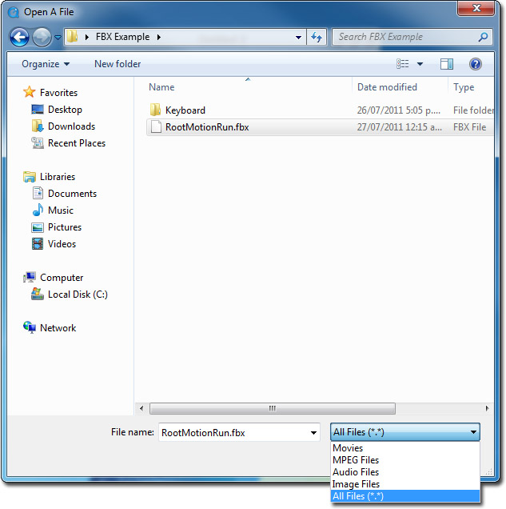
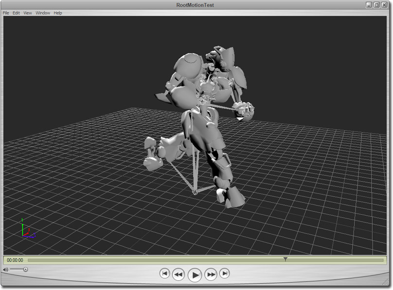

UDN
Search public documentation:
DevelopmentKitGemsViewingFBXWithQuickTime
日本語訳
中国翻译
한국어
Interested in the Unreal Engine?
Visit the Unreal Technology site.
Looking for jobs and company info?
Check out the Epic games site.
Questions about support via UDN?
Contact the UDN Staff
中国翻译
한국어
Interested in the Unreal Engine?
Visit the Unreal Technology site.
Looking for jobs and company info?
Check out the Epic games site.
Questions about support via UDN?
Contact the UDN Staff
UE3 Home > Unreal Development Kit Gems > Viewing FBX with QuickTime
UE3 Home > FBX Content Pipeline > Viewing FBX with QuickTime
UE3 Home > FBX Content Pipeline > Viewing FBX with QuickTime
Viewing FBX with QuickTime
PC and Mac compatible
Overview
Downloading the plug in and Quick Time
Opening the FBX file

Playing back animations

Other controls

- Rotating the camera - Mouse left click and hold within the view port. Dragging the mouse around will rotate the camera.
- Panning the camera - Hold the Shift key, and then mouse left click and hold within the view port. Dragging the mouse around will pan the camera.
- Zooming the camera - Hold the Z key, and then mouse left click and hold within the view port. Dragging the mouse forward and backwards will zoom the camera.
- Cycling between camera views - Press the C key to switch between camera view modes.
- Getting more help - Press the H key to bring up more help options